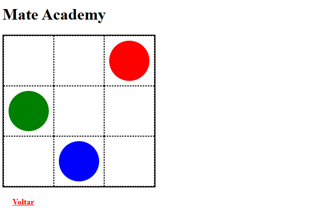
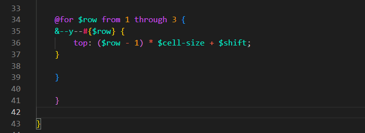

@for_loop
Intro
Agora iremos conhecer uma das funcionalidades mais úteis que o SASS nos proporciona. Como exemplo, continuaremos utilizando a mesma estrutura "game" das aulas anteriores.
Agora iremos conhecer uma das funcionalidades mais úteis que o SASS nos proporciona. Como exemplo, continuaremos utilizando a mesma estrutura "game" das aulas anteriores.
Suponha que desejemos aumentar nosso campo de jogo de 3 linhas para 5 linhas.

Para adicionarmos mais linhas, precisaríamos criar mais 6 células em nosso HTML. Embora o campo aumentasse de tamanho, ainda não teríamos modificadores para posicionar os elementos na quarta ou quinta linha. Poderíamos duplicar os modificadores manualmente e editar cada um, porém isso geraria muito trabalho, principalmente em projetos maiores.
Para resolver esse problema, podemos utilizar um loop.
Em nosso SCSS, podemos utilizar a diretiva @for da seguinte forma:
@for $row from 1 through 3 {
&--y--#{$row} {
top: ($row - 1) * $cell-size + $shift;
}
}
Em nosso código, anteriormente tínhamos algo como &--y--1. Agora passamos a utilizar &--y--#{$row}. Isso acontece porque estamos substituindo um valor fixo por uma variável. A sintaxe #{$row} é chamada de interpolação e permite inserir o valor da variável dentro do seletor.
Na propriedade top, utilizamos a expressão
($row - 1) para que a primeira linha comece
na posição correta.
Em seguida, multiplicamos esse valor por
$cell-size e somamos
$shift.
Dessa forma, cada nova linha recebe automaticamente a posição
correta sem precisarmos criar manualmente os modificadores
y--2, y--3,
y--4 e assim por diante.
O resultado fica semelhante ao exemplo abaixo:

Conteúdo da aula